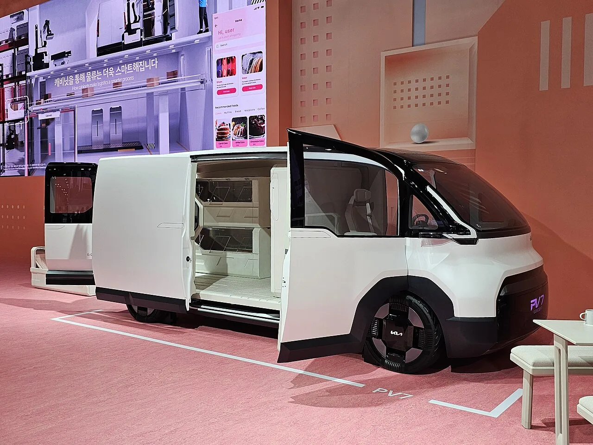
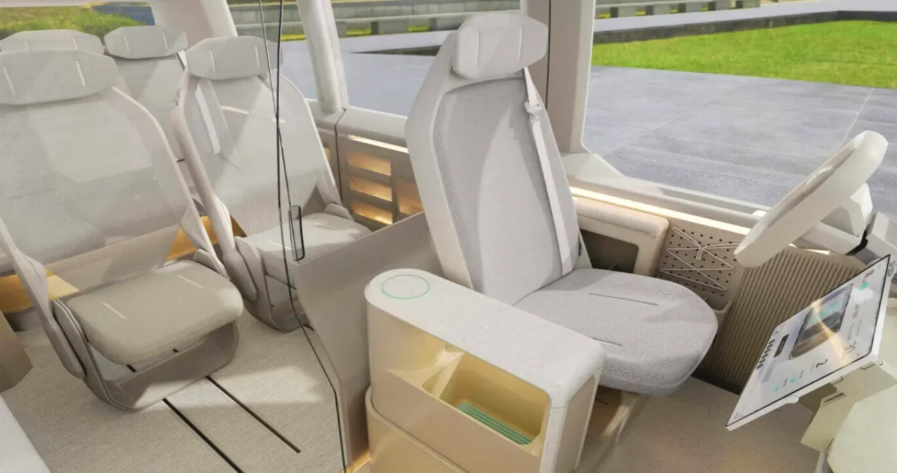
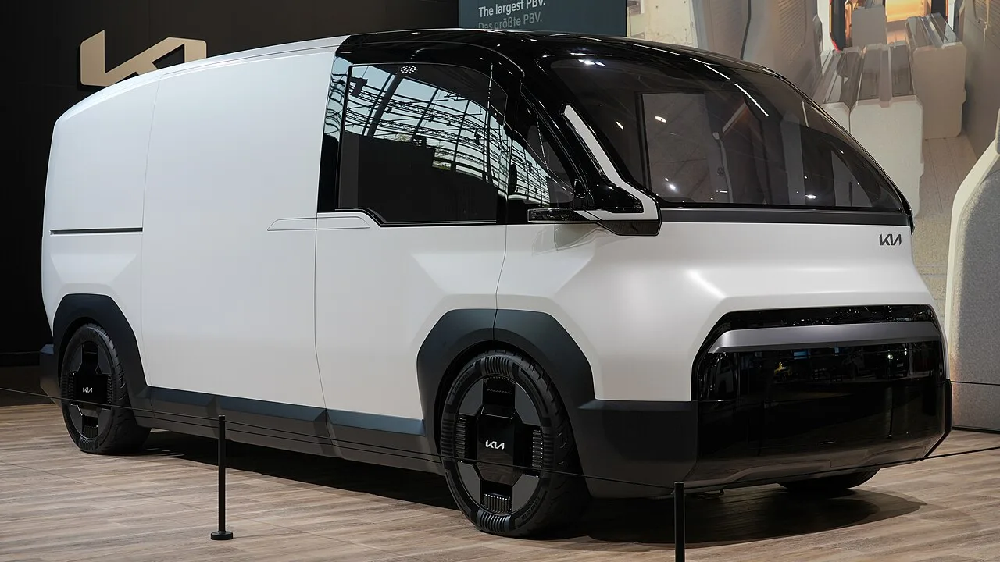
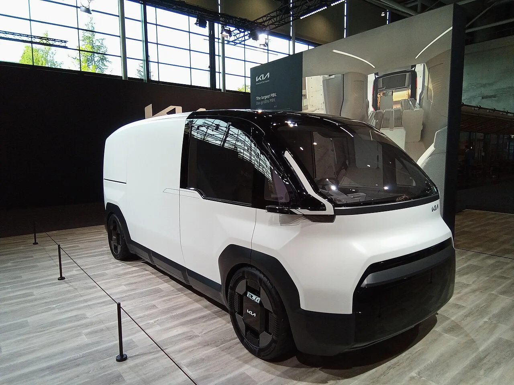
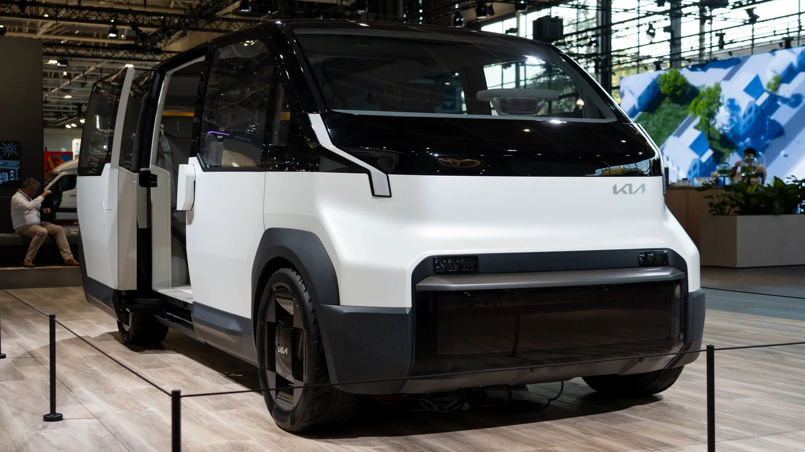

▲ 기아 PV7 콘셉트. 9월 14일 독일 하노버 IAA 트랜스포테이션에서 세계 최초 공개된다 ⓒ 기아
기아의 대형 전동화 PBV 'PV7'이 9월 14일 독일 하노버 IAA 트랜스포테이션 2026에서 세계 최초로 공개된다. 실물이 나오면 디자인과 적재공간에 눈이 가겠지만, 정작 실구매가를 좌우하는 것은 다른 곳에 있다. 제원표에 적히는 최대적재량과 승차정원이다. 이 한 줄에 따라 받을 수 있는 보조금이 수천만 원 단위로 갈린다.
1. 화물로 등록하면 — 1.5톤이 만드는 2,700만 원

▲ PV7 콘셉트의 측면 개방 모습. 적재량이 얼마로 인증되느냐가 보조금의 첫 번째 갈림길이다 ⓒ 기아
2026년은 전기화물차 보조금 체계가 크게 바뀐 해다. 기후에너지환경부는 2026년 전기자동차 보급사업 보조금 업무처리지침에서 그동안 초소형·경형·소형만 있던 전기화물차 구분에 중형·대형 구간을 새로 만들었다. 그 경계선이 바로 최대적재량 1.5톤이다.
지침 기준으로 1.5~5톤 중형 전기화물차의 국고보조금 상한은 4,000만 원, 5톤을 넘는 대형은 6,000만 원이다. 반면 1.5톤 미만은 종전대로 소형 화물 산출방식이 적용돼 국고 상한이 1,300만 원에 머문다. 적재량 인증치가 1.5톤 선을 넘느냐 마느냐에 따라 상한만 2,700만 원 갈린다.
| 구분 | 최대적재량 | 국고보조금 상한 | 지방비 30% 가정 시 합계 |
|---|---|---|---|
| 대형 화물 | 5톤 초과 | 6,000만 원 | 약 7,800만 원 |
| 중형 화물 | 1.5~5톤 | 4,000만 원 | 약 5,200만 원 |
| 소형 화물 | 1.5톤 미만 | 1,300만 원 | 약 1,690만 원 |
| 중형 − 소형 차이 | 2,700만 원 | 약 3,510만 원 | |
'상한'과 '실제 받는 돈'은 다릅니다
표의 금액은 지침이 정한 국고보조금 상한이다. 실제 지급액은 배터리 성능·1회 충전 주행거리·충전속도 등을 반영한 계수로 다시 계산되기 때문에 상한보다 낮은 경우가 대부분이다. 실제로 현대 스타리아 일렉트릭 카고(적재량 600~900kg)의 국고보조금은 소형 화물 구간에서 1,200만 원 수준으로 매겨진다. 지방비 역시 지자체 예산과 공고에 따라 달라지므로, 표의 '지방비 30% 가정'은 어디까지나 계산 예시다.
또 하나 놓치면 안 되는 대목이 있다. 중·대형 전기화물차와 소형 전기승합차는 2026년에 처음 생긴 구간이라, 세부 평가기준이 2026년 3월에 공개되고 7월부터 본격 시행됐다. 즉 이 구간의 보조금은 이제 막 굴러가기 시작한 상태이며, PV7이 국내에 들어올 시점의 기준은 다시 조정될 수 있다.
2. 승합으로 등록하면 — 10명과 16명 사이의 계단

▲ PV7 실내. 좌석을 몇 개 넣느냐가 그대로 보조금 구간을 결정한다 ⓒ 기아
사람을 태우는 쪽으로 가면 기준이 바뀐다. 이번에는 승차정원이 경계가 된다.
| 승차정원 | 차종 분류 | 국고보조금 상한 | 어린이통학용 |
|---|---|---|---|
| 10명 이하 | 전기승용차(중·대형) | 580만 원 | — |
| 11~15명 | 소형 전기승합차 | 1,500만 원 | 3,000만 원 |
| 16명 이상 | 중형 전기승합차 | 5,000만 원 | 8,500만 원 |
| 대형(길이 9m 이상급) | 대형 전기승합차 | 7,000만 원 | — |
좌석 하나 차이로 구간이 바뀐다. 10인승과 11인승은 920만 원, 15인승과 16인승은 3,500만 원 차이가 난다. PV7이 16인승 셔틀 사양으로 나온다면 국비만으로 5,000만 원대 보조금 구간에 들어갈 수 있다는 계산이 나오는 배경이다.
여기에 어린이 통학용이라는 또 하나의 문이 있다. 2026년 지침은 어린이통학용 소형 전기승합차에 3,000만 원, 중형에는 8,500만 원까지 상한을 뒀다. 통학차량용 보호 시스템을 갖추느라 차량 가격이 높아지는 점을 반영한 것이다. PV7이 어린이통학용 인증까지 받는 사양을 내놓는다면, 같은 정원에서도 보조금이 다시 두 배 안팎으로 벌어진다.
승용 구간의 전환지원금
정원 10명 이하로 승용 등록되는 사양이라면 국고 상한은 580만 원이다. 다만 2026년에는 출고 3년 이상 지난 휘발유·경유차를 폐차하거나 매각하고 전기차를 사면 최대 100만 원의 전환지원금이 얹힌다(하이브리드는 대상 제외, 가족 간 증여·판매도 제외). 이 경우 승용 국고는 최대 680만 원까지 올라간다.
3. 이미 벌어지고 있는 일 — 스타리아 사례

▲ PV7 콘셉트. 같은 차체가 카고·승합·라운지 중 무엇으로 등록되느냐에 따라 보조금이 달라진다 ⓒ 기아
이런 구조가 이론에 그치지 않는다는 것은 이미 판매 중인 현대 스타리아 일렉트릭이 보여준다. 같은 차종인데 등록 형태에 따라 국고보조금이 이렇게 갈린다.
| 스타리아 일렉트릭 사양 | 등록 분류 | 국고보조금 |
|---|---|---|
| 11인승 승합 | 소형 전기승합차 | 1,500만 원 |
| 카고(적재량 600~900kg) | 소형 전기화물차 | 1,200만 원 |
| 7인승 라운지 | 전기승용차 | 229만 원 |
7인승 라운지와 11인승 승합의 차이는 1,271만 원이다. 좌석을 덜어내고 고급 사양을 넣은 라운지가 오히려 보조금에서는 크게 불리해지는 구조다. 소비자 입장에서는 '어떤 차를 살까'보다 '어떤 사양으로 등록되는 차를 살까'가 실구매가를 더 크게 좌우하는 셈이다.
4. 9월 14일에 확인할 것

▲ PV7은 PV5보다 차체를 키워 법인·물류 수요까지 겨냥한 모델이다 ⓒ 기아
제원표에서 볼 순서
- ① 최대적재량 — 1.5톤 이상인지. 화물 사양의 보조금이 여기서 갈린다.
- ② 승차정원 — 10명 / 15명 / 16명 중 어느 구간에 걸리는지.
- ③ 배터리 용량과 1회 충전 주행거리 — 같은 구간 안에서도 성능계수에 따라 지급액이 조정된다.
- ④ 국내 인증 시점 — 출시가 2027년이므로 내년도 개편된 보조금 기준이 적용된다.
특히 마지막 항목이 중요하다. PV7의 국내 출시는 2027년 이후로 예고돼 있어, 지금 이야기되는 보조금 수치가 그대로 적용된다는 보장이 없다. 2026년 전기차 보급 예산이 2025년 7,150억 원에서 9,360억 원으로 약 20% 늘었고, 매년 내리던 단가도 전년 수준으로 묶였다. 다만 이 기조가 2027년에도 이어질지는 그해 지침이 나와야 확인된다.
또 하나. 9월 14일 프레스데이 시점에 공개되는 것은 유럽 기준 제원이다. 국내 보조금은 국내 인증 결과를 기준으로 매겨지므로, 유럽 사양의 적재량·정원이 그대로 국내 등록 분류가 되지는 않는다. 기아가 발표하는 숫자는 '방향'을 보여주는 자료로 보는 편이 정확하다.
5. 실제로 얼마 받는지 확인하는 법

▲ 전시장에 놓인 PV7 콘셉트. 실제 보조금은 국내 인증이 끝나고 차종별 지급액이 공고돼야 확정된다 ⓒ 기아
보조금은 '상한'이 아니라 '내 지역에서 이 차에 실제로 붙는 금액'이 중요하다. 확인 순서는 다음과 같다.
구매 전 확인 순서
- ① 차종별 국고보조금 — 무공해차 통합누리집(ev.or.kr)의 차종별 지원금액에서 모델·트림 단위로 확정 금액을 볼 수 있다.
- ② 지방비 — 같은 차라도 지자체별로 금액과 예산 소진 시점이 다르다. 거주지 지자체의 보급사업 공고를 별도로 확인해야 한다.
- ③ 신청 시점 — 보조금은 계약일이 아니라 출고·등록일 기준으로 확정된다. 인도가 밀리면 예산이 소진돼 못 받는 경우가 생긴다.
- ④ 전환지원금 해당 여부 — 출고 3년 이상 지난 내연차를 폐차·매각하는 경우에만 적용된다. 하이브리드와 가족 간 거래는 제외다.
- ⑤ 의무운행기간 — 보조금을 받은 차는 정해진 기간 안에 팔면 보조금을 반납해야 한다. 법인·사업용 구매라면 특히 미리 따져야 한다.
차종별 확정 금액과 지자체별 지원액은 무공해차 통합누리집에서 바로 조회할 수 있다. 무공해차 통합누리집 바로가기
6. 정리

▲ 먼저 출시된 PV5 패신저. PV7은 이보다 차체를 키운 상위 모델이다 ⓒ 기아
체크포인트
- 전기화물차는 최대적재량 1.5톤이 경계다. 국고 상한이 1,300만 원과 4,000만 원으로 갈린다(5톤 초과 대형은 6,000만 원).
- 전기승합차는 정원 10명·15명이 경계다. 580만 원에서 5,000만 원까지 벌어지고, 어린이통학용이면 상한이 다시 올라간다.
- 스타리아 사례처럼 같은 차종이라도 등록 사양에 따라 실구매가가 1,000만 원 이상 달라진다.
- 표의 금액은 상한이다. 실제 지급액은 성능계수로 재계산되고 지방비는 지자체마다 다르므로, 무공해차 통합누리집에서 차종별 확정 금액을 확인해야 한다.
- PV7의 국내 출시는 2027년 이후이므로, 최종 지급액은 그해 개편된 기준을 확인해야 한다.